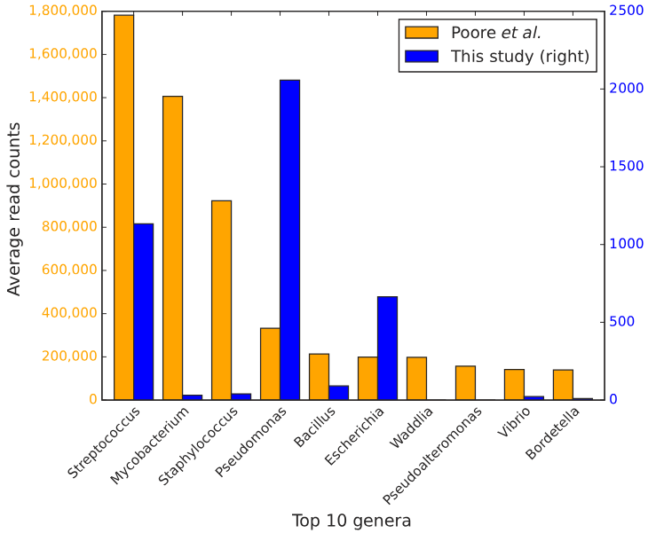
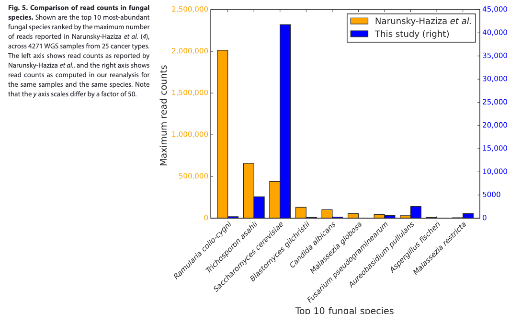

BIOL 3111: Genomics in Medicine • Movement 1 • Week 6
Bacterial Genomics:
Commensals vs. Pathogens
From Low-Biomass Metagenomic Pitfalls to Life-Saving Ecology and Hospital Outbreak Sleuthing.
1 : 1
Cell Count Reality
38 Trillion bacteria vs. 30 Trillion human cells; 99% residing in the anaerobic colonic bioreactor.
>99.6%
Host DNA Swamping
In solid tumor sequencing, non-human reads are <0.4%; low-biomass traps and database artifacts abound.
94%
FMT Cure Rate
Restoring secondary bile acid converters cures recurrent C. diff vs. 31% vancomycin (DSMB early halt).
41 SNVs
WGS Outbreak Barcode
Resolving single-nucleotide variants (SNVs), single-base mutations that unmask transmission links and reservoirs.
Prof. Sergei L. Kosakovsky Pond • Department of Biology • Temple University
Movement 1 • The Tumor "Microbiome" Mirage
The Sensational Claim: Diagnosing 32 Cancers from Blood
How a blockbuster 2020 paper promised a universal microbial blood test — before unraveling.
🚨 The Rise and Fall of the "Blood Microbiome"
- The Blockbuster Finding: In March 2020, Poore et al. (Nature 2020) ↗ claimed machine learning models achieved 95% to 100% accuracy distinguishing 32 cancer types using microbial DNA signatures.
- The Universal Promise: The authors asserted that human tumors harbor unique bacterial fingerprints detectable in cell-free DNA, fragments of genetic material circulating in blood plasma.
- The Formal Retraction: In July 2024, Nature formally retracted the entire paper after independent audits revealed the signatures were computational artifacts.
🏛️ The Hall of Metagenomic Absurdity (What the Classifiers Claimed):
- Deep-Sea Vent Archaea in Breast Tumors: Methanothermus fervidus, a hyperthermophile, an organism adapted to boiling temperatures (85°C) in submarine hydrothermal vents, was flagged as a breast cancer biomarker!
- Salt Lake Extremophiles in Bladder Tumors: Halonatronum saccharophilum, an extremophile, an organism requiring high-salt, alkaline soda lakes (pH > 9), was declared a diagnostic marker for bladder cancer.
- Barley Crop Fungal Blight in Lungs: Ramularia collo-cygni, an agricultural fungus, a plant pathogen causing leaf spots on barley crops, showed >2 million reads in lung tissue (an Illumina primer artifact!).
💡 Pedagogical Warning: Machine learning algorithms can easily memorize database noise and batch artifacts, generating flawless test accuracy from pure phantom data.
Formal Retraction Notice • Nature 631, 912 (July 2024)
"Microbiome analyses of blood and tissues suggest cancer diagnostic approach"
"The authors have retracted this article... independent reanalyses showed that technical errors, batch effects, and contamination of public databases with human DNA accounted for the apparent diagnostic signal."
Diagnostic Autopsy: The 3 Fatal Flaws
- 1. De-Hosting Failure: De-hosting, the computational removal of human DNA reads, failed when human repeat sequences matched contaminated bacterial records.
- 2. Batch Confounding: Sequencing centers processed different tumor types on different plate batches, so classifiers learned plate IDs instead of tumor biology.
- 3. Reagent Kitome: The kitome, background microbial DNA contaminating commercial extraction kits and laboratory water, was mistaken for tumor flora.
2020
Nature Paper
95–100% AUC
95–100% AUC
2021–23
Commercial Boom
$100M+ Venture
$100M+ Venture
JUL 2024
Formal Retraction
Database Flaws
Database Flaws
SEP 2025
Ge et al. Audit
De-Hosting Ground
De-Hosting Ground
The Central Question: When human host DNA exceeds 99.6% of a clinical sample, how can genomics rigorously separate true biology from computational mirage?
Movement 1 • Metagenomic Physics
The Low-Biomass Trap: >99.6% Human Host Reads
In solid tumor sequencing, host human DNA completely overwhelms the sequencer flowcell.
⚖️ Host Domination in Clinical Oncology
- Physical Biomass Disparity: Unlike the distal colon, the final segment of the large intestine where bacteria thrive at high density, internal solid tissues consist almost exclusively of human cells.
- TCGA Empirical Reality: Ge et al. (Sci Transl Med 2025) ↗ audited 5,734 whole-genome sequencing (WGS) datasets, comprehensive readouts of all DNA in a sample, across 25 cancer types: on average, 99.65% of reads mapped to human.
- The Trace Remainder: Only 0.35% (averaging 2.4 million reads out of ~700 million per sample) remained unmapped after human reference filtering.
- The Magnification Effect: When true microbial target DNA is less than 0.05% of a library, even minuscule reagent impurities or database misannotations get magnified by thousands of times.
💡 The Analytical Law: In low-biomass metagenomics, contamination is not a minor noise term; it is the dominant non-human signal.
Read Allocation in 5,734 TCGA Tumor WGS Datasets (Ge et al. 2025)
Movement 1 • Computational Contamination
Database Sins I: Human Alu Repeats in Draft Genomes
When contaminated reference genomes act as magnets for millions of human reads.
🧬 The Mechanism of Spurious Overcounting
- The Dirty Database: Public repositories like GenBank contain thousands of draft genomes, preliminary genome assemblies containing unjoined sequence fragments, that inadvertently incorporated human DNA fragments during culture.
- The Repeat Magnet: The human genome is packed with over 1 million copies of Alu and LINE repetitive elements, high-copy mobile elements that comprise >40% of our DNA.
- The Fatal Mapping Error: If a draft bacterial genome in your classifier database contains even one human Alu fragment, millions of human reads from the patient sample will align to that bacterial record!
- The Astronomical Inflation: Poore et al. reported 1.78 million Streptococcus reads per sample; clean reanalysis by Ge et al. found only 1,129 — an inflation of 1,570-fold!
💡 Takeaway: High-copy human repetitive elements inside bacterial database records cause extensive, false-positive read spikes.
Read Count Inflation for Top Genera (Poore 2020 vs. Ge 2025)
| Genus | Poore et al. (Avg) | Ge et al. (Clean) | Inflation Factor |
|---|---|---|---|
| Streptococcus | 1,780,000 | 1,129 | 1,576 × |
| Mycobacterium | 1,400,000 | 31 | 45,161 × |
| Staphylococcus | 922,000 | 39 | 23,641 × |

Movement 1 • Computational Contamination
Database Sins II: Sequencing Vectors in Fungal Scaffolds
How synthetic Illumina primers turned a failed sequencing run into a "barley pathogen" epidemic.
🧫 The "Cancer Mycobiome" Illusion
- The Fungal Claim: Narunsky-Haziza et al. (Cell 2022) ↗ reported distinctive fungal signatures within the mycobiome, the community of fungi inhabiting a host tissue, that allegedly predicted cancer patient survival.
- The Vector Infiltration: Ge et al. (2025) discovered that public fungal references contained synthetic Illumina PCR primers and adapters, artificial DNA tags used in library preparation, assembled directly into chromosomal scaffolds!
- The Barley Pathogen Case: Ramularia collo-cygni is a fungus that infects barley crops. Sample h1948 was reported to contain 2,013,180 reads of this plant fungus!
- The 80-bp Trap: Reanalysis revealed sample h1948 was a failed sequencing run where 95.4% of reads were vector artifacts — and 34 million reads mapped to a single 77-bp primer region inside the fungal scaffold!
💡 The Quality Rule: Metagenomic reference databases must be scrubbed of all synthetic cloning vectors, sequencing adapters, and primers before clinical use.
GenBank Fungal Contaminants & Top Fungal Read Inflation (Ge et al. 2025)
| Organism | Scaffold Accession | Length | Contamination Source |
|---|---|---|---|
| M. globosa | NW_001849834.1 | 897 bp | Human Genomic DNA |
| T. asahii | NW_014040855.1 | 58 bp | Illumina PCR Primer |
| R. collo-cygni | NW_019716256.1 | 58 bp | Illumina Primer (1.48M reads!) |

Movement 1 • Rigorous Re-evaluation
What Is Real? Genuine Pathogens vs. Contaminants
Ge et al. (2025) establish clear criteria separating genuine biology from laboratory noise.
🔬 Genuine Oncogenic Microbes
- Anatomical Plausibility: Microbes are genuinely abundant only in tissues directly exposed to the external environment (cervix, gut, oral cavity) or harboring specific chronic infections.
- Human Papillomavirus (HPV): High read counts for HPV-16 and HPV-18 in 48% of cervical cancer and 19% of head and neck cancers — completely absent in normal controls.
- Helicobacter pylori: Confirmed at high abundance in gastric adenocarcinoma, stomach cancer driven by chronic bacterial inflammation.
- Colorectal Commensals: Bacteroides fragilis and Fusobacterium nucleatum reliably enriched in colon and rectal tumors.
💡 Biological Signal: Genuine tumor-associated microbes display extreme tissue specificity and biological mechanism, not flat distribution across all samples.
🧪 Ubiquitous Laboratory Contaminants
- The "Kitome": The kitome, background microbial DNA present in chemical extraction kits and laboratory water, contaminates low-biomass sequencing runs.
- Delftia acidovorans: Detected in 1,968 TCGA samples across every cancer type — a notorious water-borne reagent contaminant.
- Cutibacterium acnes: A ubiquitous human skin commensal shed into sample tubes by laboratory technicians during handling.
- Saccharomyces cerevisiae: Baker's yeast, ubiquitous in academic sequencing centers from shared equipment and personnel lunches.
- Plant Viruses: Rosellinia necatrix partitivirus 8, a virus of plant-infecting fungi, found across hundreds of tumor tubes!
💡 Contamination Signature: If a microbe appears at low, equal abundance across brain, lung, ovarian, and kidney tumors, it came from the lab, not the patient.
Movement 2 • The Commensal Genome ("The Good")
The 1:1 Reality: 38 Trillion Bacteria vs. 30 Trillion Human Cells
Debunking the 10:1 textbook myth with rigorous biophysical cellular accounting.
📊 The Revised Human Census (Sender et al., PLOS Biol 2016)
- The 40-Year Myth: In 1972, microbiologist Thomas Luckey estimated that bacteria outnumber human cells 10 to 1 — a crude calculation blindly cited in textbooks for decades.
- The Precise Recalculation: In 2016, Sender, Fuchs, and Milo (PLOS Biology) ↗ performed a rigorous census: a standard 70-kg adult male contains ~38 trillion bacteria and ~30 trillion human cells (ratio ~1.3:1).
- Erythrocyte Dominance: By cell count, 84% of all human cells are erythrocytes, red blood cells that lack nuclei and genomic DNA (25 trillion cells); all nucleated cells combined total only ~3 trillion!
- Colonic Concentration: Over 99% of all human-associated bacteria reside in the distal colon, the final segment of the large intestine, representing ~0.4 kg of luminal biomass.
💡 The Quantitative Rule: We are not 90% bacterial; we are an approximately 1:1 mutualistic partnership, concentrated almost entirely in the gastrointestinal lumen.
Human Cellular Census vs. Bacterial Spatial Localization
Movement 2 • Methodological Foundations
16S Amplicon Profiling vs. Shotgun Metagenomics
Choosing the right molecular tool: targeted taxonomic census vs. whole-genome functional catalog.
🎯 16S rRNA Amplicon Profiling
- Universal Taxonomic Barcode: The bacterial 16S ribosomal RNA (rRNA) gene, encoding the structural RNA of prokaryotic ribosomes, serves as an evolutionary clock.
- Targeted PCR Amplification: Primers target strictly conserved regions flanking nine hypervariable regions (V1–V9), DNA segments whose sequences diverge rapidly between species.
- Host-Free Profiling: Universal prokaryotic primers ignore human host DNA, yielding an economical census even in samples containing abundant human cells.
- Analytical Limitations: 16S sequencing cannot distinguish individual bacterial strains and remains blind to plasmid-borne antibiotic resistance genes or virulence toxins.
💡 Clinical Utility: 16S amplicon profiling is ideal for high-biomass fecal profiling and tracking gross ecosystem recovery, but cannot track active pathogen outbreaks.
🔬 Whole-Metagenome Shotgun (WGS)
- Total Metagenomic Catalog: Whole-metagenome shotgun sequencing (WGS) extracts and fragments all DNA in a sample without target enrichment, sequencing host and microbial genomes together.
- Functional Annotation: Captures the microbial pan-genome, the complete gene repertoire across all co-existing species, annotating metabolic enzymes and resistance determinants.
- Single-Nucleotide Resolution: Enables strain-level discrimination and forensic single-nucleotide variant (SNV) transmission tracing.
- The Low-Biomass Penalty: In blood plasma or tissue biopsies, >99.6% of flowcell capacity is consumed sequencing human host DNA, demanding rigorous computational de-hosting.
💡 Clinical Utility: Shotgun WGS provides single-base forensic power required for outbreak epidemiology and virulence mapping, but requires aggressive host filtering.
Movement 2 • Computational Hygiene
De-Hosting Pipelines: The Two-Pass Reference Standard
Why standard GRCh38 mapping leaks human reads — and how CHM13 T2T seals the gaps.
🛑 Why Standard Human Filtering Fails
- The Incomplete Reference: The primary human reference genome assembly, GRCh38, still contains hundreds of unsequenced gaps (~150 Mbp) across repeat-rich genomic regions.
- The Leakage Mechanism: These missing sequences concentrate in heterochromatin, tightly packed repeat-dense DNA located in centromeres and telomeres.
- The Fall-Through Disaster: Unmapped human reads pass into the microbial classification step. Because public bacterial genomes contain human repeat contaminations, these reads falsely hit microbial records!
- The Two-Pass Standard: Aligning reads against GRCh38 and then against CHM13 T2T, the gapless telomere-to-telomere human genome completed in 2022, eliminates 99.99% of leaked host reads.
💡 De-Hosting Rule: A single pass against GRCh38 is insufficient. A complete telomere-to-telomere second pass is required to prevent human repeat false positives.
The Two-Pass De-Hosting Architecture (Ge et al. 2025)
Movement 2 • Functional Metagenomics
Commensals as an Endocrine Organ: Short-Chain Fatty Acids
Anaerobic fermentation converts indigestible dietary fiber into epigenetic modulators.
🌾 Fermentation of Resistant Carbohydrates
- Carbohydrate Cleaving Power: The human genome encodes fewer than 20 carbohydrate enzymes; gut microbes encode thousands of Carbohydrate-Active Enzymes (CAZymes), enzymes that digest complex polysaccharides.
- The SCFA Triad: Anaerobic fermentation yields three primary short-chain fatty acids (SCFAs), small fatty molecules containing two to four carbon atoms: acetate, propionate, and butyrate.
- Colonocyte Fuel: Butyrate serves as the primary energy source for colonocytes, the epithelial cells lining the large intestine, providing >70% of their ATP.
- Epigenetic Gene Control: Butyrate functions as a natural Histone Deacetylase (HDAC) inhibitor, an agent that maintains acetyl tags on histones to relax chromatin. This induces transcription of FOXP3, expanding anti-inflammatory regulatory T (Treg) cells.
💡 Functional Lesson: Commensal bacteria act as a decentralized metabolic organ, transforming fiber into chromatin-modifying epigenetic tags that maintain immune tolerance.
Systemic Multi-Organ Metabolic & Epigenetic Signaling of SCFAs
Movement 2 • Commensal Defense
Colonization Resistance: The Secondary Bile Acid Shield
Commensal enzyme conversion creates a chemical barrier blocking pathogen spore germination.
🧪 Bile Acid Enzymatic Transformation
- Colonization Resistance: Healthy commensals enforce colonization resistance, the biological mechanism blocking invading pathogens from establishing infection.
- Primary Bile Acids: The human liver synthesizes primary bile acids, cholesterol-derived detergents like cholate that emulsify dietary fats.
- Enzymatic Deconjugation: Specialized commensals express Bile Salt Hydrolases (BSHs), bacterial enzymes that strip glycine and taurine amino acids from bile salts.
- Secondary Bile Shield: Colonic anaerobes like Clostridium scindens execute 7α-dehydroxylation, removing a carbon-7 hydroxyl group to produce secondary bile acids (deoxycholic and lithocholic acid) that kill vegetative pathogens.
💡 Biochemical Principle: The human liver makes the precursor, but commensal bacterial enzymes synthesize the active antimicrobial barrier.
The Molecular Switch for Clostridioides difficile Germination
Movement 2 • Pharmacomicrobiomics ("The Good" as a Second Liver)
Pharmacomicrobiomics: The Second Liver & Xenobiotic Metabolism
How gut bacterial enzymes reactivate detoxified chemotherapy drugs to trigger intestinal toxicity.
💊 Bacterial Glucuronidases & Drug Reactivation
- The Second Liver: Pharmacomicrobiomics, the study of how personal gut microbiomes alter drug metabolism and toxicity, reveals that microbial enzymes heavily modify pharmaceutical compounds.
- Hepatic Detoxification: The liver metabolizes the colorectal cancer prodrug irinotecan (CPT-11) into its active form SN-38, then attaches a glucuronide sugar to excrete it as harmless, inactive SN-38G into bile.
- Bacterial Glucuronidases: Colonic bacteria express β-glucuronidases (GUS enzymes), bacterial enzymes that strip the protective glucuronic sugar to feed on it as a carbon food source.
- Intestinal Ulceration & Rescue: Bacterial GUS cleavage regenerates cytotoxic SN-38 in the colon lumen, causing severe epithelial sloughing and diarrhea. In 2010, Wallace et al. engineered selective GUS inhibitors that protect the intestine without killing bacteria or blocking chemotherapy!
💡 Therapeutic Lesson: Commensal bacterial enzymes can reverse human liver detoxification. Selective bacterial enzyme inhibitors abolish chemotherapy toxicity without harming commensal viability.
The Irinotecan Detoxification & Bacterial GUS Reactivation Cycle
Movement 2 • The Healthy Baseline (HMP Consortium)
The Human Microbiome Project: Mapping the Healthy Baseline
NIH landmark consortium profiles 242 healthy adults to establish the reference human metagenome.
🧬 The NIH Human Microbiome Project (HMP, 2012)
- The Reference Baseline: In 2012, the Human Microbiome Project (HMP), a landmark NIH consortium mapping normal microbial diversity, sequenced 242 thoroughly screened, disease-free adult volunteers.
- Anatomical Sampling: Investigators sampled 15 to 18 distinct body habitats across five major anatomical regions: oral cavity, skin, airways, gastrointestinal tract, and vagina.
- Niche Specialization: Using Principal Coordinates Analysis (PCoA), a dimensionality-reduction technique that projects ecological distances between microbial samples onto 2D coordinates, samples clustered strictly by body site rather than by individual human subject.
- The 8-Million-Gene Catalog: While the human genome contributes ~20,000 protein-coding genes, the healthy human microbiome pool contributes over 8 million unique microbial genes — expanding our functional genetic repertoire by a factor of 360!
💡 Ecological Principle: Anatomy dictates the microbiome. Your oral microbiome resembles another person's mouth far more than it resembles your own gut or skin.
PCoA Ordination of Human Body Habitats (HMP Consortium, Nature 2012)
Movement 2 • Functional Metagenomics (The Metabolic Engine)
The Functional Redundancy Paradigm: Taxonomic Diversity vs. Metabolic Constancy
Why healthy individuals share identical metabolic machinery despite vastly different bacterial species.
⚙️ Taxonomic Volatility vs. Functional Invariance
- Taxonomic Volatility: Across healthy subjects, species abundance varies dramatically: one person's gut contains 75% Bacteroidetes, while another contains 80% Firmicutes (intersubject taxonomic variation >65%).
- Functional Constancy: When shotgun metagenomic reads are mapped to KEGG metabolic pathways, standardized catalogs of biochemical reactions and enzyme complexes, individual variation drops to <8%.
- Functional Redundancy: Gut ecosystems exhibit functional redundancy, the ecological principle where phylogenetically distinct bacterial species encode the same core metabolic enzymes (such as glycolysis, vitamin B synthesis, and amino acid synthesis).
- Diagnostic Reality: Because healthy individuals harbor completely different species combinations, looking for a single "healthy species formula" fails; diagnostics must assess the collective functional gene pool.
💡 Systems Biology Axiom: The human host selects for metabolic jobs, not bacterial taxonomic names. Diverse bacterial species perform identical physiological work.
Taxonomic Volatility vs. Functional Invariance Across 5 Healthy Subjects
Movement 2 • Microbial Ecosystems (Enterotype Archetypes)
Enterotypes of the Human Gut: Three Ecological Archetypes
Long-term dietary patterns shape distinct, stable microbial equilibria across global populations.
🧭 Three Robust Ecological States (Arumugam et al., 2011)
- The Enterotype Discovery: In 2011, Arumugam et al. demonstrated that human gut metagenomes cluster into three distinct ecological states called enterotypes, stable microbial community structures dominated by specific bacterial genera.
- Enterotype 1 (Bacteroides): Dominated by the genus Bacteroides, this cluster correlates with Western diets rich in animal protein and saturated fats, excelling at fermenting carbohydrates and animal fats.
- Enterotype 2 (Prevotella): Dominated by Prevotella, this cluster thrives in agrarian, plant-rich diets characterized by high fiber, unrefined cereals, and plant polysaccharides.
- Enterotype 3 (Ruminococcus): Dominated by Ruminococcus, this cluster specializes in degrading dietary cellulose and mucin, the protective mucus glycoprotein layer lining the intestinal epithelium.
💡 Ecological Continuum: Enterotypes are not rigid blood types; they represent continuous ecological equilibria driven primarily by long-term habitual diet.
The Three Enterotype Ecosystems & Dietary Determinants
Movement 2 • Active Learning Checkpoint
Spot Check 1: Metagenomic QC & Commensal Ecology
Assess computational error modes in low-biomass sequencing vs. gut chemical ecology.
🔒 Passcode: Given Live in Class
02:00
Question: A cancer researcher sequences a breast tumor biopsy and identifies 250,000 reads matching Mycobacterium and 40,000 reads matching Ramularia collo-cygni (a plant fungus). Which analytical explanation is most probable?
A) The patient has contracted an agricultural fungal infection combined with atypical mycobacterial breast cancer colonization.
B) Incomplete draft genomes contaminated with human Alu repeats and fungal scaffolds containing Illumina PCR primers inflated read counts.
C) The patient's gut commensals lost 7α-dehydroxylase activity, allowing environmental plant fungi to translocate into breast tissue.
D) 16S rRNA amplicon primers cross-reacted with eukaryotic mitochondrial ribosomal subunits in the biopsy.
B) Incomplete draft genomes contaminated with human Alu repeats and fungal scaffolds containing Illumina PCR primers inflated read counts.
C) The patient's gut commensals lost 7α-dehydroxylase activity, allowing environmental plant fungi to translocate into breast tissue.
D) 16S rRNA amplicon primers cross-reacted with eukaryotic mitochondrial ribosomal subunits in the biopsy.
📱 Canvas Checkpoint: Open Temple Canvas on your device, navigate to Quizzes → Lecture 6 Spot Check 1, enter passcode [Announced in Class], and submit.
Metagenomic Audit Decision Tree
Step 1: Check Read Depth Uniformity
Do reads align evenly across the entire bacterial chromosome, or do 99.9% pile up on a single 80-bp scaffold locus?
Step 2: BLAST Alignment of Scaffold Peaks
Run BLAST against synthetic vectors: does the peak match Illumina adapters, pUC plasmids, or human Alu repeats?
Step 3: Biological & Anatomical Feasibility
Is the organism an agricultural plant pathogen (e.g. Ramularia)? If so, contamination is virtually certain.
Key Lesson: Extraordinary genomic claims require extraordinary de-contamination proof. Always inspect raw alignment BAM files!
Movement 3 • Ecological Therapeutics
Antibiotic Annihilation & The C. diff Trap
How broad-spectrum antibiotics trigger catastrophic colonic dysbiosis.
💣 The Cascade of Colonic Destruction
- Iatrogenic Vulnerability: An iatrogenic condition, meaning an illness caused unintentionally by medical treatment, begins when a patient receives broad-spectrum antibiotics for an unrelated infection.
- Commensal Microflora Depletion: Antibiotics indiscriminately eradicate hundreds of mutualistic anaerobic taxa, clearing Bacteroidetes and Clostridium scindens.
- Loss of the Chemical Shield: Eradication of C. scindens eliminates 7α-dehydroxylase activity, allowing host primary bile acids to surge unopposed.
- Spore Awakening: Ingested hospital Clostridioides difficile spores sense primary bile, germinate into vegetative bacilli, and produce lethal TcdA and TcdB enterotoxins, bacterial protein toxins that damage the intestinal mucosa.
💡 Pathophysiological Irony: Antibiotics cure the original infection while converting the colon into an ideal breeding ground for lethal toxins.
Clinical Spectrum: From Healthy Mucosa to Pseudomembranous Colitis
1. The Intact Commensal Mucosa (Healthy State)
Dense anaerobic biofilm, high secondary bile acids (>2 mM DCA), intact tight junctions (claudin/occludin), low luminal oxygen.
2. Post-Antibiotic Microbiome Collapse (Dysbiosis)
>90% species diversity lost; primary bile acids (TCA) surge; C. diff spores germinate and attach to denuded epithelial cells.
3. Cytotoxin Secretion & Epithelial Sloughing
TcdA/TcdB enzymes transfer glucose (glucosylation) onto Rho/Rac GTPases → actin filament collapse → mucosal necrosis (pseudomembranes).
The Clinical Crisis: Standard antibiotic therapy (oral vancomycin) kills vegetative C. diff, but cannot kill dormant spores and prevents commensal recovery, creating a 30–65% relapse cycle!
Movement 3 • Landmark Clinical Trials
van Nood et al. (NEJM 2013): The Fecal Microbiota Trial
A randomized, controlled trial testing donor fecal suspension against standard vancomycin.
📋 Trial Architecture: The FECAL Study
- Patient Population: Enrolled adult patients with documented recurrent Clostridioides difficile infection who relapsed after at least one standard antibiotic course.
- Arm 1 (Donor FMT): 4–5 days of oral vancomycin, followed by whole-bowel lavage, then a single infusion of fecal microbiota transplantation (FMT), the transfer of processed donor stool to restore gut microbial diversity.
- Arm 2 (Vancomycin Alone): Standard clinical guideline therapy: 14 days of oral vancomycin (500 mg four times daily).
- Arm 3 (Vancomycin + Lavage): 14 days of oral vancomycin preceded by whole-bowel lavage, a clinical procedure mechanically purging the intestinal tract with polyethylene glycol.
💡 Trial Design Masterclass: Including Arm 3 was critical: it proved that the therapeutic benefit was the living donor ecosystem, not the mechanical washout of the colon.
Methodological Rigor: Donor Screening & Delivery Logistics
Exhaustive Donor Screening Protocol
Donors underwent exhaustive medical questionnaires (no antibiotics in 3 months) + blood screening (HIV, HTLV, Hepatitis A/B/C, Treponema) + stool screening (parasites, Salmonella, Shigella, Campylobacter, Yersinia, C. diff).
Preparation & Nasoduodenal Administration
Fresh donor stool (50–100g) collected within 6 hours of infusion, homogenized in 500 mL sterile saline, filtered through gauze, and administered via nasoduodenal catheter past the acidic stomach barrier.
Primary Clinical Endpoint
Resolution of C. diff-associated diarrhea without recurrence within 10 weeks after the completion of initial randomized therapy.
Movement 3 • Landmark Clinical Trials
The Efficacy Paradox: 81–94% Cure vs. 31% for Antibiotics
Why the Data and Safety Monitoring Board (DSMB) halted the trial early.
🏆 Defeating the Standard of Care
- Single Infusion Cure: 81% (13 of 16 patients) were completely cured after a single donor stool infusion without any further relapse.
- Second Infusion Rescue: Two of the remaining three patients received a second infusion from a different donor and were permanently cured (94% overall resolution, 15 of 16).
- Antibiotic Arm Collapse: Standard vancomycin cured only 31% (4 of 13); vancomycin with bowel lavage cured only 23% (3 of 13).
- DSMB Early Termination: At the pre-planned interim analysis, the Data and Safety Monitoring Board (DSMB), an independent committee of experts monitoring patient safety, halted the trial early (P < 0.001) due to overwhelming FMT superiority.
💡 Ethical Lesson: When a novel ecological therapy shows overwhelming statistical superiority over standard drugs, trials must stop to offer the treatment to all control patients.
Kaplan-Meier Primary Resolution Curves (van Nood et al., NEJM 2013)
Movement 3 • Mechanistic Metagenomics
Metagenomic Engraftment: Reconstituting the Commensal Ecosystem
16S sequencing proves donor microbes successfully colonize and restore ecological balance.
🌱 Restoring Clonal Richness
- Pre-FMT Dysbiosis: Before infusion, patient stool samples displayed total ecosystem collapse. The Shannon diversity index, a mathematical metric scoring ecosystem species richness and evenness, dropped by >60%, dominated 83% by opportunistic Proteobacteria (Enterobacteriaceae).
- Rapid Engraftment: Within 14 days post-infusion, recipient gut profiles underwent a complete structural transformation, establishing equilibrium with donor profiles.
- Firmicutes & Bacteroidetes Boom: Reconstitution was driven by robust expansion of Bacteroidetes and anaerobic Clostridium clusters IV and XIVa (including C. scindens).
- Metabolomic Restoration: Metabolomics, the comprehensive chemical measurement of small metabolic molecules, confirmed secondary bile acid surge from near zero back to healthy physiological levels (>2 mmol/kg).
💡 Ecological Proof: FMT is not an immune stimulant; it is an active ecological seeding that recreates the biochemical bile acid barrier.
16S rRNA Phylum Abundance Shifts (van Nood et al. Figure 3)
Movement 3 • Active Learning Checkpoint
Spot Check 2: FMT Efficacy & Trial Ethics
Evaluate clinical trial design, early termination triggers, and ecological outcomes.
🔒 Passcode: Given Live in Class
02:00
Question: The van Nood et al. (2013) trial was halted early by the Data and Safety Monitoring Board (DSMB). Which clinical trial condition ethically necessitated early termination?
A) FMT caused severe unexpected autoimmune colitis in the donor group due to unregulated SCFA production.
B) Vancomycin achieved 100% cure in Arm 2, rendering donor fecal transplantation clinically obsolete.
C) Interim analysis demonstrated overwhelming superiority of FMT (P < 0.001); continuing to randomize relapsing patients to vancomycin arms was ethically impermissible.
D) 16S metagenomic sequencing revealed that donor stool was contaminated with unmapped plant viruses.
B) Vancomycin achieved 100% cure in Arm 2, rendering donor fecal transplantation clinically obsolete.
C) Interim analysis demonstrated overwhelming superiority of FMT (P < 0.001); continuing to randomize relapsing patients to vancomycin arms was ethically impermissible.
D) 16S metagenomic sequencing revealed that donor stool was contaminated with unmapped plant viruses.
📱 Canvas Checkpoint: Open Temple Canvas on your device, navigate to Quizzes → Lecture 6 Spot Check 2, enter passcode [Announced in Class], and submit.
Clinical Trial Ethics & Stopping Rules
The Role of the DSMB:
An independent board of physicians and biostatisticians monitors accumulating trial data to protect patient safety.
Pre-Planned Interim Stopping Boundaries:
If an experimental treatment demonstrates statistical superiority exceeding pre-specified alpha boundaries (e.g. O'Brien-Fleming boundary, P < 0.001), the trial must be halted immediately.
The Crossover Duty:
Upon early termination, the superior treatment must be offered to all control group patients suffering relapses.
Ethical Imperative: Clinical trials exist to establish truth for patient benefit; once truth is unequivocal, continuing futile control therapy violates the Declaration of Helsinki.
Movement 3 • Microbiome Safety & Fatal Risks
The Dark Side of Crude FMT: Fatal Pathogen Transmission
When donor stool transfers lethal drug-resistant organisms and silent oncogenic islands.
🚨 The 2019 FDA Shockwave: DeFilipp et al. (NEJM 2019) ↗
- The Fatal Sepsis Case: In 2019, two immunocompromised clinical trial patients developed invasive bacteremia caused by Extended-Spectrum β-Lactamase (ESBL)-producing E. coli, bacteria encoding enzymes that hydrolyze advanced cephalosporin and penicillin antibiotics; one patient died.
- The Screening Blind Spot: The donor was an asymptomatic carrier whose stool passed standard culture tests. Routine hospital laboratories did not screen for multi-drug resistant organisms (MDROs) on selective media.
- The Uncharacterized Virome: Beyond bacteria, crude donor stool transfers billions of uncharacterized bacteriophages, archaea, fungi, and the virome, the total community of eukaryotic viruses present in the donor.
- The Colibactin Oncogenic Threat: Donor strains harboring the
pksgenomic island, a specialized cluster of bacterial genes, secrete colibactin, a chemical toxin that directly crosslinks DNA strands to induce colorectal cancer mutational signatures.
💡 Genomic Safety Mandate: Crude stool is an uncharacterized organ transplant; without deep metagenomic shotgun surveillance, it risks inoculating lethal resistomes into vulnerable hosts.
Lethal ESBL Transmission & The Metagenomic Screening Gap
The Standard Culture Failure: Routine agar failed to detect ESBL E. coli because selective antibiotics (cefotaxime) were not present in the media, creating false reassurance.
The Metagenomic Solution: Direct shotgun resistome mapping against CARD flags mobilized blaCTX-M genes within hours, stopping fatal transmission.
Movement 3 • Precision Microbial Therapeutics
The Regulatory Frontier: From Raw Stool to Cloned Consortia
How the $15,000 drug approval dilemma is replacing raw donor stool with precision genomics.
⚖️ The Stool Status Paradox: Drug vs. Tissue vs. Biologic
- FDA Enforcement Discretion (2013): The FDA classified human stool as an Investigational New Drug (IND), but allowed non-profit stool banks (like OpenBiome) to provide frozen donor units for ~$500 without formal drug trials.
- The Commercial Breakthrough: In 2022–2023, the FDA approved the first defined biotherapeutics: Rebyota (RBX2660, rectal microbiota suspension) and Vowst (SER-109, oral purified Firmicutes spores).
- The $15,000 Equity Dilemma: Following approval, FDA narrowed enforcement discretion to sunset crude stool banks. Commercial products carry list prices of $9,000 to $17,000, sparking major healthcare access and reimbursement battles.
- The Ultimate Synthetic Frontier: The future is replacing human stool with defined synthetic consortia — 8 to 12 fully sequenced, lab-grown strains delivering the bai 7α-dehydroxylase operon under sterile Good Manufacturing Practice (GMP) standards, federal regulations ensuring pharmaceutical purity.
💡 Therapeutic Paradigm Shift: Medicine is advancing from crude stool transplantation to precision synthetic genomics: manufactured, sequenced bacterial enzymes replacing donor lottery.
Three Generations of Microbiome Therapeutics
GEN 1: CRUDE DONOR FMT (2013–2022)
~$500 • OpenBiome Stool Bank
- Format: Whole raw donor stool slurry infused via colonoscopy, retention enema, or NG tube.
- Composition: 1,000+ uncharacterized bacterial species, unknown virome, and opportunistic fungi.
- Vulnerabilities: Pathogen transmission risk (fatal ESBL sepsis), high donor-to-donor variability.
↓
GEN 2: STANDARDIZED SPORES (2022–2023)
$9,000–$17,500 • FDA Approved
- Products: Vowst (SER-109, oral purified spores) & Rebyota (RBX2660, rectal suspension).
- Mechanics: Ethanol treatment kills vegetative pathogens, isolating bacterial Firmicutes spores.
- Tradeoff: High purity and standardized dosing; extreme commercial price tags limiting access.
↓
GEN 3: CLONED SYNTHETIC CONSORTIA (FUTURE)
0% Donor Stool • Scalable GMP
- Substrate: 8–12 fully sequenced, pure laboratory-cultured bacterial strains grown in bioreactors.
- Biochemistry: Cloned C. scindens (bai operon) + key short-chain fatty acid producers.
- Goal: Zero pathogen transmission risk, known pharmacokinetics, reproducible synthetic biologics.
FDA Approvals: Rebyota (BLA 125739, Nov 2022) • Vowst SER-109 (Feuerstadt et al., NEJM 2022, BLA 125765) ↗
Movement 4 • Foundations of Antibiotic Action (Streptomycin Discovery)
The Dawn of Antibiotics: Streptomycin & The Soil Actinomycetes
How soil microbial warfare yielded the first cure for tuberculosis and launched the antibiotic era.
🍂 The Waksman Platform & Tuberculosis
- The Gram-Negative Blind Spot: While Alexander Fleming discovered penicillin in 1928, penicillin proved completely ineffective against Gram-negative bacilli and Mycobacterium tuberculosis.
- Soil Prospecting Breakthrough: In 1943, Albert Schatz, Elizabeth Bugie, and Selman Waksman isolated streptomycin from Streptomyces griseus, a filamentous soil actinomycete that produces chemical weapons to suppress microbial competitors.
- The Tuberculosis Cure: Streptomycin provided the first pharmaceutical cure for tuberculosis, emptying sanatoriums worldwide and earning Waksman the 1952 Nobel Prize.
- The First Randomized Trial: In 1948, the British Medical Research Council (MRC) tested streptomycin in the first modern randomized controlled trial, establishing the gold standard of clinical evidence.
💡 Historical Lesson: Over two-thirds of all natural clinical antibiotics originate from soil Streptomyces, evolved over hundreds of millions of years of subterranean chemical warfare.
The Discovery of Streptomycin & The Waksman Screening Platform
Movement 4 • Molecular Mechanisms of Action (Biophysics)
Molecular Mechanism of Streptomycin: Ribosomal Sabotage
How aminoglycosides bind the 30S decoding center to induce catastrophic translation errors.
🎯 The 30S Decoding Center & Mistranslation
- Aminoglycoside Architecture: Streptomycin belongs to the aminoglycoside class, antibiotics composed of amino-modified sugars linked to an aminocyclitol ring core.
- Targeting the 30S Subunit: Streptomycin binds the small 30S ribosomal subunit, specifically lodging inside the decoding region (A-site) where 16S rRNA monitors codon-anticodon pairing.
- Interlocking with S12 Protein: Streptomycin forms direct hydrogen bonds and salt bridges with the S12 ribosomal protein (encoded by rpsL) and invariant 16S rRNA bases (A1408, G1491).
- Catastrophic Mistranslation: Binding flips adenines A1492 and A1493 into an active conformation, forcing the ribosome to accept incorrect tRNAs. The resulting flood of aberrant, misfolded proteins inserts into the inner membrane, causing pore formation and rapid bactericidal death!
💡 Biophysical Principle: Streptomycin does not just pause translation; it actively corrupts fidelity, forcing bacteria to produce toxic mutant proteins that destroy their own membranes.
Atomic Anatomy of the Streptomycin-Ribosome Binding Pocket (Ramakrishnan 2000)
Movement 4 • Evolution of Resistance (Origins & Mechanisms)
How Resistance Evolved: Target Mutants & The Soil Resistome
Why clinical resistance emerged in months — and why resistance genes predate human medicine by millennia.
🛡️ Dual Pathways: Mutation vs. Horizontal Enzymes
- Rapid Clinical Failure: Within months of streptomycin's introduction in 1944, physicians observed treatment failures in tuberculosis patients receiving monotherapy due to spontaneous resistant mutants.
- Target Site Mutations: Single nucleotide substitutions in rpsL (such as Lys43Arg or Lys88Arg in ribosomal protein S12) or in 16S rRNA (rrs) abolish streptomycin binding without stopping translation.
- Aminoglycoside-Modifying Enzymes: Bacteria acquire aminoglycoside-modifying enzymes (AMEs), bacterial enzymes (adenylyltransferases aadA, phosphotransferases strA-strB) that add chemical tags to inactivate the drug.
- The Ancient Environmental Resistome: In 2006, Gerard Wright discovered the antibiotic resistome, the global collection of all resistance genes across microbial environments. Soil bacteria evolved these exact resistance genes billions of years ago to survive microbial warfare!
💡 Evolutionary Truth: Human antibiotic use did not invent resistance mechanisms; it merely exerted catastrophic selective pressure that mobilized ancient environmental genes into clinical pathogens.
Molecular Routes to Streptomycin Resistance: Target Mutation vs. Enzymatic Shield
Movement 4 • Global Epidemiological Crisis (Lancet GRAM Study)
The Global AMR Crisis: 4.95 Million Lives at Risk
Landmark Lancet GRAM study quantifies the true global mortality burden of drug-resistant infections.
🌍 The 2022 Lancet GRAM Benchmark
- The Global Audit: In 2022, the Global Research on Antimicrobial Resistance (GRAM) study published the first comprehensive worldwide burden analysis in The Lancet, evaluating 471 million records across 204 countries.
- The Quantified Mortality Burden: In 2019, bacterial AMR was associated with 4.95 million deaths, with 1.27 million deaths directly attributable to drug-resistant pathogens — killing more people annually than HIV/AIDS (864,000) or malaria (643,000).
- The Deadly Six: Just six bacterial pathogens account for over 73% of all AMR-attributable deaths: E. coli, Staphylococcus aureus, Klebsiella pneumoniae, Streptococcus pneumoniae, Acinetobacter baumannii, and Pseudomonas aeruginosa.
- Severe Geographic Disparities: The highest mortality burden strikes western sub-Saharan Africa (27.3 deaths per 100,000) and South Asia, driven by poverty, lack of clean water/sanitation, and empirical antibiotic overuse without diagnostic confirmation.
💡 Global Health Reality: AMR is not a future hypothetical risk; it is already one of the leading infectious causes of death worldwide, disproportionately devastating low-resource health systems.
Global Mortality Burden of Bacterial Antimicrobial Resistance (Lancet GRAM 2022)
Movement 4 • The Modern Clinical Dilemma (Pipeline Void & ESKAPE)
The Post-Antibiotic Pipeline Void & The ESKAPE Threat
Why novel Gram-negative antibiotic development collapsed — and what happens when prophylaxis fails.
⏳ The 40-Year Structural Discovery Void
- The Empty Pipeline: No new major structural class of antibiotics targeting Gram-negative bacilli has been approved since the late 1980s; major pharmaceutical companies largely abandoned antimicrobial R&D.
- The Gram-Negative Permeability Wall: Gram-negative bacteria possess an asymmetric outer membrane coated in lipopolysaccharide (LPS), narrow porins, and multidrug efflux pumps that expel drugs before they reach targets.
- The ESKAPE Pathogens: In 2008, Louis Rice designated the ESKAPE pathogens (Enterococcus faecium, Staphylococcus aureus, Klebsiella pneumoniae, Acinetobacter baumannii, Pseudomonas aeruginosa, and Enterobacter), hospital bugs that "escape" standard drugs.
- Threat to Modern Medicine: Modern clinical medicine relies completely on effective antibiotic prophylaxis; without it, routine hip replacements, cesarean sections, cancer chemotherapy, and organ transplantation become deadly.
💡 Clinical Reality: Prophylactic antibiotic efficacy underpins surgical oncology, organ transplantation, and neonatal intensive care. Resistance threatens the foundation of hospital medicine.
The Antibiotic Discovery Void (1940–2025) & The ESKAPE Threat
Movement 4 • Pathogen Genomics & AMR ("The Evil")
When Bacteria Turn Weaponized: Plasmids & Resistance
Horizontal gene transfer accelerates antimicrobial resistance far beyond vertical evolution.
⚔️ Mobilome Dynamics: Evolution by Acquisition
- The Speed of HGT: While point mutations accumulate slowly, horizontal gene transfer (HGT), the lateral exchange of genetic material between non-parental bacterial cells, spreads resistance genes in hours.
- The Transposon Vehicle: The blaKPC carbapenemase gene resides within Tn4401, a mobile transposon, a self-translocating DNA segment capable of hopping between completely unrelated bacterial plasmids.
- The Miracle Drug Neutralized: Carbapenems (meropenem, imipenem), broad-spectrum β-lactam antibiotics reserved as critical frontline treatments, are rendered inactive when KPC enzymes hydrolyze their chemical ring.
- The Pan-Resistant Phenotype: Clinical isolates frequently acquire resistance to penicillins, cephalosporins, carbapenems, fluoroquinolones, and aminoglycosides on the same plasmid!
💡 Evolutionary Reality: In pathogen genomics, plasmids are autonomous genetic vectors that turn harmless commensals into pan-resistant hospital superbugs overnight.
Molecular Anatomy of Carbapenem Resistance Transfer
1. Conjugative Plasmid Transfer (The Bridge)
Donor bacterium expresses a type IV secretion pilus, a hollow protein filament transferring single-stranded plasmid DNA directly into recipient cell cytoplasm.
2. Tn4401 Transposon Insertion
Transposase enzyme catalyzes excision and site-specific integration of the blaKPC cassette into stable host replicon plasmids (e.g. IncFII).
3. Hydrolysis of the β-Lactam Ring
Active-site Serine-70 in KPC-2 enzyme attacks the four-membered β-lactam ring of meropenem, permanently deactivating the antibiotic.
The Clinical Crisis: When KPC entered Klebsiella pneumoniae sequence type 258 (ST258), it created an internationally disseminated hospital clone with >40% bacteremia mortality.
Movement 4 • Genomic Epidemiology
The 2011 NIH Outbreak: Carbapenem-Resistant K. pneumoniae
A premier research hospital faces an untreatable outbreak despite strict barrier precautions.
🏥 The Infiltration of KPC-ST258
- Index Patient 1: On June 13, 2011, a 43-year-old female patient with complications from graft-versus-host disease, an immune condition where donor bone marrow cells attack recipient tissues, was transferred to the NIH ICU.
- Immediate Containment: Cultured positive on day 1 for KPC-ST258, an internationally disseminated clone of Klebsiella pneumoniae encoding the carbapenemase enzyme. Hospital enacted aggressive contact isolation.
- Discharge & Relief: Patient 1 was discharged on July 15. For three consecutive weeks, zero hospital surveillance swabs grew KPC. Clinical leadership believed containment succeeded.
- The Nightmare: On August 5, an unexpected second patient in a completely different ward tested positive for KPC. Over the next six months, 18 patients were infected; 6 died.
💡 The Epidemiological Mystery: How did an untreatable superbug jump between patients with zero documented clinical overlap?
Snitkin Figure 1: Outbreak Timeline & Patient Hospital Stays

Panel A • Epidemic Curve
18 documented patient infections spanning 6 months with 6 patient fatalities.
Panel B • Ward Infiltration
Complex patient trajectories across ICU, surgical wards, and dedicated cohorting.
Panel C • Network Knot
Dense web of potential physical contacts that classical epidemiology could not resolve.
Movement 4 • Genomic Epidemiology
Snitkin et al. (2012): The 41-SNV Barcode
Whole-genome sequencing reveals micro-evolutionary divergence invisible to classical typing.
🔍 The Blind Spot of Classical Microbiology
- Failure of Standard Tools: Pulsed-Field Gel Electrophoresis and Multi-Locus Sequence Typing (MLST), a typing technique sequencing seven conserved housekeeping genes, showed isolates were 100% identical.
- Whole-Genome Metagenomics: Snitkin et al. sequenced 34 patient isolates on Illumina platforms, reading the entire 5.3-Mbp chromosome and plasmids.
- The 41-SNV Fingerprint: Across the entire outbreak, they identified exactly 41 single-nucleotide variants (SNVs), single-base substitutions distinguishing individual bacterial isolates.
- Single-Nucleotide Clocks: Because bacteria accumulate ~1 mutation every few weeks, each unique SNV acted as a private barcode timestamping transmission events.
💡 Resolution Revolution: WGS provides single-nucleotide forensic resolution, transforming epidemiological guesswork into exact transmission tracking.
Snitkin Figure 2: The 41-SNV Segregation Heatmap Across Isolates

Panel A • Intra-Host Diversity
Index Pt 1 harbored divergent sub-clones across body sites (Throat vs. BAL vs. Groin).
Panel B • Two Hospital Waves
41 SNVs partitioned cohort into Cluster I (Groin lineage) and Cluster II (Throat lineage).
Movement 4 • Genomic Epidemiology
Resolving the Invisible: Silent Vectors & Cleaning Failures
Genomic parsimony uncovers uncultured carriers and persistence on decontaminated equipment.
🕵️♂️ Uncovering Hidden Transmission Pathways
- Two Independent Lineages: WGS revealed Index Patient 1 harbored two distinct intra-host variants: an initial lung/groin isolate and a later throat isolate, initiating two separate transmission clusters.
- Silent Asymptomatic Vectors: Patient 1 never overlapped with Patient 4 in any hospital ward (black arrow in transmission map). WGS proved transmission occurred via silent asymptomatic carriers who never developed clinical symptoms.
- The Ventilator Reservoir: Months after Patient 6 was discharged, an environmental swab of a mechanical ventilator yielded KPC-ST258 differing by only 1 SNV from Patient 6's isolate!
- Chemical Resilience: The bacterium survived standard quaternary ammonium and bleach decontamination protocols inside ventilator internal valves.
💡 Epidemiological Power: WGS unmasks transmission links mediated by uncultured carriers and environmental reservoirs that hospital charts declare "impossible".
Snitkin Figure 3: Genomic & Epidemiological Transmission Map

Red Arrows • Ward Overlap
Direct epidemiological contact: patients shared ward space or nursing shifts during shedding.
Black Arrows • Zero Overlap
Zero ward overlap (e.g. Pt 1 → Pt 4): transmission mediated by silent asymptomatic vectors!
The Ventilator Reservoir
Months post-discharge, Pt 6's mechanical ventilator harbored living bacteria matching Pt 6 by 1 SNV.
Movement 4 • Genomic Parsimony
The Temporal Inversion Paradox: Patient 3 Precedes Patient 2
When phylogenetic mutation accumulation flips the apparent chronological direction of infection.
⏳ Clinical Calendar vs. Genomic Ancestry
- The Clinical Observation: Patient 2 cultured positive on August 5; Patient 3 cultured positive on August 15 (10 days later). Standard hospital records assumed Patient 2 transmitted to Patient 3.
- Phylogenetic Polarity: Phylogenetic polarity, the direction of evolutionary change from ancestral to derived states, revealed true infection order. Patient 3 carried the ancestral genome, while Patient 2 had a novel mutation.
- Phylogenetic Parsimony: Under phylogenetic parsimony, the scientific principle selecting the evolutionary scenario requiring the fewest mutations, an ancestral genome cannot descend from a mutated derivative!
- The Silent Incubation: Patient 3 silently carried and transmitted the bacteria to Patient 2 in late July before ever developing symptoms or testing positive.
💡 Core Lesson: Clinical symptom onset is an unreliable proxy for transmission order. Derived vs. ancestral SNVs define true directionality.
Resolving Transmission Polarity: Clinical Dates vs. Derived SNVs
Phylogenetic Polarity Rule: An ancestor cannot evolve from a derived descendant.
Movement 4 • In Vivo Resistance Evolution
The Colistin Resistance Cliff: In Vivo Selection
How monotherapy with a drug of last resort drove rapid bacterial membrane re-engineering.
💊 The Drug of Last Resort
- The Last Line: With all β-lactams, aminoglycosides, and fluoroquinolones neutralized by KPC-ST258, clinicians deployed colistin (polymyxin E), a polycationic peptide antibiotic of last resort.
- Mechanism of Action: Colistin binds negatively charged phosphate groups on Lipid A, the hydrophobic lipid anchor of bacterial lipopolysaccharides, disrupting membrane integrity.
- The Peril of Monotherapy: When colistin was administered as sole therapy in Patient 1, Patient 8, and Patient 15, high-level resistance evolved in vivo within weeks.
- The Molecular Mutation: Whole-genome sequencing identified independent missense mutations in the PmrB sensor kinase, an environmental sensor protein controlling lipid charge modification.
💡 The Resistance Law: Monotherapy against high-inoculum bacterial infections exerts brutal selective pressure, driving rapid target modification.
Biochemical Mechanism of Colistin Resistance Evolution
Movement 4 • The Post-Antibiotic Reality • Phage Therapy Case Study (1 of 2)
The Case of Tom Patterson: Pan-Drug Resistant Superbug & The Clinical Abyss
When all eighteen commercial antibiotics fail. Gallstone pancreatitis triggers lethal superinfection with pan-drug-resistant Acinetobacter baumannii.
🩺 The Infection, The Superbug & The Therapeutic Dead End
PAN-DRUG RESISTANT
The Vacation Crisis: In November 2015, Tom Patterson, PhD (a psychiatry professor at UC San Diego), suffered acute gallstone pancreatitis while vacationing in Egypt. An infected pancreatic pseudocyst rapidly turned necrotic.
The Pathogen: Fluid aspirates cultured Acinetobacter baumannii—a notorious Gram-negative ESKAPE pathogen known for environmental durability on hospital plasticware and rapid accumulation of resistance genes.
The 18-Antibiotic Failure: Hospital microbiologists tested the isolate against all 18 available commercial antibiotics across all classes (carbapenems, aminoglycosides, fluoroquinolones, tigecycline, and colistin). The strain was resistant to every single drug.
Septic Shock & Coma: The infection breached into the bloodstream, triggering septic shock, respiratory collapse, and acute renal failure requiring hemodialysis. Patterson lapsed into a deep, unarousable coma.
🚨 Clinical Definition: Pan-Drug Resistance (PDR), non-susceptibility to all commercially available antimicrobial agents, leaves clinicians with zero pharmaceutical treatment options.
Authentic Resistance Profile (Antibiogram) & Clinical Collapse
18/18 RESISTANT
| Drug Class | Agent Tested | MIC (μg/mL) | Breakpoint | Clinical Status |
|---|---|---|---|---|
| Carbapenem | Meropenem | > 64 | ≤ 2 | RESISTANT (R) |
| Aminoglycoside | Amikacin | > 64 | ≤ 16 | RESISTANT (R) |
| Glycylcycline | Tigecycline | > 8 | ≤ 2 | RESISTANT (R) |
| Polymyxin (Last Line) | Colistin | > 16 | ≤ 2 | RESISTANT (R) |
| Penicillin / BLI | Ampicillin-Sulbactam | > 32 / 16 | ≤ 8 / 4 | RESISTANT (R) |
Movement 4 • The Post-Antibiotic Reality • Phage Therapy Case Study (2 of 2)
The Bacteriophage Rescue: Lytic Cocktails & Evolutionary Phage Steering
Steffanie Strathdee's global phage hunt, emergency FDA approval, and evolutionary trade-offs that resensitize superbugs to antibiotics.
🦠 Emergency FDA Protocol & The Evolutionary Trap
EXPERIMENTAL SALVAGE
The Global Phage Hunt: Steffanie Strathdee, PhD (infectious disease epidemiologist and Patterson's wife), worked with Dr. Robert Schooley to petition the FDA for an emergency Investigational New Drug (eIND) compassionate-use permit.
Sewage to Syringe: Scientists at the Naval Medical Research Center (NMRC) and Texas A&M Center for Phage Technology screened sewage libraries, purifying 8 lytic bacteriophages (Myoviridae and Podoviridae) active against Patterson's strain.
Historic Intravenous Infusion: In March 2016, doctors infused the purified phage cocktail directly into Patterson's bloodstream—the first intravenous bacteriophage therapy in US history. Within 48 hours, Patterson emerged from his coma!
Evolutionary Phage Steering: To evade phages, A. baumannii mutated its capsular polysaccharide (wzc locus). The evolutionary trade-off was fatal to the bacteria: losing its capsule stripped away its defenses, resensitizing it to previously useless antibiotics (minocycline, colistin)!
🎯 Evolutionary Axiom: Phage Steering deliberately exploits evolutionary trade-offs, forcing superbugs to choose between viral lysis or antibiotic resensitization.
Mechanism of Lytic Rescue & The Phage-Antibiotic Synergistic Trap
CURED MARCH 2016
Movement 4 • The Post-Antibiotic Reality • Antibacterial Pipeline (1 of 2)
The Antibacterial Pipeline: Innovation Void & The WHO Reality Check
A narrow clinical pipeline dominated by me-too derivatives of legacy drugs. The broken market economics driving pharmaceutical disinvestment.
⚠️ The Clinical Pipeline Audit & The Stewardship Paradox
WHO 2024 REPORT
The Pipeline Deficit: The World Health Organization (WHO 2024) antibacterial report identified only 97 antibiotics in clinical trials globally across all phases. In comparison, oncology has over 1,500 active candidates!
The 80% Derivative Trap: More than 80% of pipeline candidates are incremental modifications of existing antibiotic classes discovered prior to 1980 (β-lactams, tetracyclines, aminoglycosides).
The Inhibitor Treadmill: Most recent approvals pair older β-lactams with novel β-lactamase inhibitors (e.g., sulbactam-durlobactam for A. baumannii, ceftazidime-avibactam, cefepime-enmetazobactam). While lifesaving, bacterial single point mutations quickly overcome these combinations.
The Broken Economic Model: Developing a new drug costs >$1.3 billion. Yet antibiotics are taken for only 7–14 days and restricted by hospital stewardship to prevent resistance. This stewardship paradox bankrupts pioneering biotechs (e.g., Achaogen, Melinta).
📉 Economic Reality: Large pharmaceutical firms have exited antibiotic R&D because curing an infection in 10 days produces negligible commercial return compared to lifelong chronic disease therapies.
Decades of Discovery Void & WHO Clinical Pipeline Composition
50-YEAR VOID
Movement 4 • The Post-Antibiotic Reality • Antibacterial Pipeline (2 of 2)
Next-Generation Antimicrobial Strategies: Novel Targets & Phage Therapeutics
Breaking the 50-year discovery void: First-in-class small molecules targeting outer membrane biogenesis and precision biological countermeasures.
🔬 Novel Small Molecules & Precision Biologics
2024 BREAKTHROUGHS
Zosurabalpin (LptB2FGC Inhibitor): Reported in 2024 by Roche, this first-in-class macrocyclic peptide inhibits the lipopolysaccharide transport complex (LptB2FGC) in A. baumannii. Trapping LPS in the inner membrane causes toxic accumulation and rapid cell lysis (*Nature 2024*).
Lolamicin (LolCDE Inhibitor): Discovered in 2024, lolamicin selectively blocks the lipoprotein transport system (LolCDE) of pathogenic Gram-negatives, killing pathogens while completely sparing gut commensals (*Nature 2024*).
CRISPR-Cas Antimicrobial Phagemids: Engineered phages deliver Cas9 nucleases programmed to recognize and cleave plasmid resistance genes (
blaKPC, mcr-1), curing antibiotic resistance across bacterial populations.
Enzybiotics (Recombinant Endolysins): Phage-derived cell wall hydrolases (e.g., exebacase / CF-301) digest bacterial peptidoglycan externally in minutes, eradicating recalcitrant biofilms.
🛡️ The Precision Paradigm: Moving away from broad-spectrum "carpet bombing" antibiotics toward pathogen-specific molecular scalpels that protect our protective commensal microbiome.
Next-Generation Modalities & Bacterial Envelope Targets
NOVEL TARGETS
| Technology | Molecular Target | Spectrum & Specificity | Microbiome Impact |
|---|---|---|---|
| Zosurabalpin | LptB2FGC (LPS export) | Carbapenem-Resistant A. baumannii | Zero gut dysbiosis |
| Lolamicin | LolCDE (Lipoproteins) | Pathogenic Enterobacteriaceae | Spares anaerobes & Bacteroides |
| Phage Cocktails | Surface capsular glycans | Strain-specific precision | 100% commensal preservation |
| Endolysins | Peptidoglycan murein bonds | Rapid biofilm lysis (e.g. MRSA) | Targeted genus/species only |
Movement 4 • Active Learning Checkpoint
Spot Check 3: Outbreak Parsimony & Resistance Selection
Resolve transmission polarity and resistance mechanisms from clinical genomic data.
🔒 Passcode: Given Live in Class
02:00
Question: Patient 2 tests positive for KPC-ST258 on Aug 5 with 1 private derived SNV. Patient 3 tests positive on Aug 15 with 0 novel SNVs (identical to Index Patient 1). What does phylogenetic parsimony prove about transmission?
A) Patient 2 transmitted to Patient 3, because Patient 2 became symptomatic 10 days earlier.
B) Patient 3 was infected first from Patient 1 (silent incubation), carried the ancestral genome, and transmitted to Patient 2, where the novel SNV evolved.
C) The isolates represent completely independent community-acquired introductions bearing identical MLST types.
D) Patient 2 acquired colistin resistance via horizontal plasmid transfer from Patient 3.
B) Patient 3 was infected first from Patient 1 (silent incubation), carried the ancestral genome, and transmitted to Patient 2, where the novel SNV evolved.
C) The isolates represent completely independent community-acquired introductions bearing identical MLST types.
D) Patient 2 acquired colistin resistance via horizontal plasmid transfer from Patient 3.
📱 Canvas Checkpoint: Open Temple Canvas on your device, navigate to Quizzes → Lecture 6 Spot Check 3, enter passcode [Announced in Class], and submit.
Forensic Outbreak Sleuthing Rules
The Parsimony Directionality Law:
Derived mutations accumulate irreversibly along branches. An ancestor cannot descend from a mutated progeny!
Incubation & Colonization Asynchrony:
Patients can remain silently colonized for weeks before symptom presentation or positive surveillance cultures.
In Vivo Monotherapy Hazards:
Monotherapy selects for spontaneous point mutations in regulatory kinases (pmrB), causing rapid treatment failure.
Genomic Axiom: The genome is the ultimate witness. When hospital charts and phylogenetic trees disagree, the sequence reveals the true sequence of physical events.
Movement 5 • Active Learning Sprint • Outbreak Forensics
In-Class Clinical Sprint: Resolving the ICU Transmission Outbreak
A single forensic investigation for all pairs. Reconstruct the parsimony tree, audit index isolate KPNIH1 on NCBI, and upload your digital proof-of-work.
🩺 The Outbreak Case & The Clinical Blunder
SINGLE UNIFIED TASK
Outbreak Vignette: Three ICU patients culture positive for carbapenem-resistant K. pneumoniae (KPC-ST258). Whole-genome sequencing reveals the following single-nucleotide variant (SNV) profiles:
• Patient X (Cultured Sept 1): 2 Derived SNVs (pos 14,200: C→T; pos 108,400: G→A)
• Patient Y (Cultured Sept 8): 0 Novel SNVs (Identical to Ancestral Index Genotype)
• Patient Z (Cultured Sept 15): 1 Derived SNV (pos 14,200: C→T)
⚠️ The Hospital Epidemiology Dilemma:
Hospital infection control initially concluded Patient X (cultured Sept 1) was the index case who infected Patient Y and Patient Z. Does genomic parsimony support this conclusion, or does sequence data contradict the clinical timeline?
🔍 The 3 Forensic Deliverables You Must Complete (Zero Paper):
- 1. Parsimony Deduction (Q1): Deduce true transmission direction among Patients X, Y, and Z using accumulated derived SNVs.
- 2. NCBI Pathogen Audit (Q2 - Proof-of-Work): Query index isolate
KPNIH1(BioSample:SAMN01057611) on NCBI Pathogen Detection and upload a screenshot of your resistome audit. - 3. Clinical Chart Note (Q3): Report the primary carbapenemase resistance gene and explain why culture collection dates misled the infection control team.
Collaboration: Work in pairs. Both students submit their verified digital audit on Canvas to receive active learning credit.
Genomic Character Matrix & Proof-of-Work
DIGITAL PROOF REQUIRED
| Patient Isolate | Culture Date | Pos 14,200 | Pos 108,400 | Derived SNV Count |
|---|---|---|---|---|
| Patient X | Sept 1 | T (Derived) | A (Derived) | 2 SNVs |
| Patient Y | Sept 8 | C (Ancestral) | G (Ancestral) | 0 SNVs |
| Patient Z | Sept 15 | T (Derived) | G (Ancestral) | 1 SNV |
🖥️ Digital Proof-of-Work (Zero Paper Required • Submit on Canvas):
- Step 1 (NCBI Query): Open NCBI Pathogen Detection and search index isolate
KPNIH1(BioSample:SAMN01057611). - Step 2 (Resistome Audit): Expand the AMR Genotypes column to identify the acquired carbapenemase gene family and associated porin mutations.
- Step 3 (Proof Upload): Upload a browser screenshot showing the
KPNIH1record and AMR table to Canvas Q2 as your verified proof-of-work.
Canvas Token: [Announced in Class]
SUBMIT DIGITAL PROOF-OF-WORK →
Movement 5 • End-of-Lecture Summative Quiz • Concept Mastery & Proof-of-Work
Lecture 6 Summative Quiz: Bacterial Genomics & AMR Mastery
Five Concept Mastery Checkpoints + Mandatory Proof-of-Work Worksheet (Simpson Diversity & Lipid A Resistance). Complete live on Canvas.
6 Core Assessment Domains Tested on Canvas:
1. Mandatory Proof-of-Work (2.0 Pts):
Simpson Diversity calculation ($D = 1/\sum p_i^2$) in dysbiosis vs post-FMT, plus outer membrane Lipid A charge neutralization sketch.
2. Metagenomic Contamination (1.0 Pt):
Why <0.4% microbial biomass creates false cancer microbiomes; 2-pass CHM13-T2T filtering.
3. Commensal Chemical Ecology (1.0 Pt):
C. scindens 7α-dehydroxylase converting primary bile acids into germination inhibitors.
4. FMT Clinical Trial Ethics (1.0 Pt):
Early termination criteria by DSMB for overwhelming clinical superiority (94% vs 31%).
5. Colistin Resistance Genetics (1.0 Pt):
In vivo pmrB mutations constitutively modifying Lipid A surface charge to repel polymyxins.
6. Outbreak WGS vs PFGE/MLST (1.0 Pt):
Resolving hospital transmission chains with 41 SNVs when classical typing reveals zero variation.
Individual Mastery: 6 questions • 7 minutes • Immediate score and comprehensive rationales released upon submission.
Live Canvas Submission & Proof-of-Work
PROOF-OF-WORK REQUIRED
📋 Canvas Protocol:
- Open Canvas Quizzes on your device and select Lecture 6 Summative Quiz.
- Enter active passcode: [Announced in Class].
- Work independently. 7 minutes allocated for calculations and uploads.
📸 Question 1 Proof-of-Work Checklist (Upload PNG/PDF):
- Simpson Diversity Math: Show equations for $D_{\text{dysbiosis}} \approx 1.10$ vs $D_{\text{post-FMT}} = 10.0$.
- Lipid A Diagram: Sketch normal negative Lipid A ($PO_4^{2-}$) binding colistin vs mutant Lipid A (+PEtN / L-Ara4N) repelling colistin ($+ \leftrightarrow +$).
- Student Watermark: Clearly write
[Full Name] • [AccessNet ID] • [Date]at top of document.
Passcode: [Announced in Class]
LAUNCH CANVAS QUIZ →
Movement 5 • Synthesis & Portals
Master Synthesis: The Good, The Evil & The Artifact
Core genomic rules governing low-biomass sequencing, mutualism, and pathogen surveillance.
1. The Artifact (Metagenomics)
- Low Biomass Physics: When host DNA is >99.6%, contamination is the dominant signal (Ge et al. 2025 ↗).
- Database Hygiene: Uncleaned draft genomes and synthetic vector primers act as repeat magnets.
- Two-Pass Rule: GRCh38 + CHM13 T2T is mandatory to seal heterochromatic leakage.
💡 Axiom: Check raw BAM alignments before declaring novel tumor microbiomes.
2. The Good (Commensal Ecology)
- 1:1 Partnership: 38T bacteria vs 30T human cells (Sender et al. 2016 ↗).
- Chemical Ecology: C. scindens 7α-dehydroxylase converts primary bile to toxic DCA/LCA (Buffie 2015 ↗).
- Ecological Cure: FMT achieves 81–94% cure in recurrent C. diff (van Nood 2013 ↗).
💡 Axiom: Commensals provide chemical barriers that standard antibiotics destroy.
3. The Evil (AMR & Outbreaks)
- Single-Base Power: 41 SNVs out of 5.3 Mbp resolve hospital outbreak transmission (Snitkin 2012 ↗).
- Temporal Inversion: Ancestral vs derived SNVs overrule clinical symptom dates.
- In Vivo Selection: Colistin monotherapy drives rapid PmrB membrane charge reversal.
💡 Axiom: Genomic sequence is the ground-truth witness of transmission history.
Next Week (Lecture 7): Viral Genomics, Recombination & Pandemic Tracking (HIV, SARS-CoV-2, Avian Flu).
Canvas Quiz & Reading Assignment 7 available Thursday midnight.